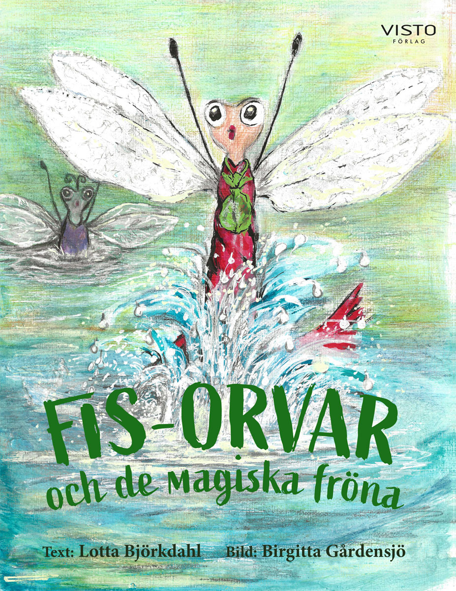

SMÅ FRÖN. STORA ÄVENTYR.
Lite magi.
Mycket vänskap.
Och en och
annan fis.
Välkommen till min sagovärld! Jag är Lotta Björkdahl, författare till Fis-Orvar och de magiska fröna.
En berättelse att skratta åt. Och växa med.
✧✧

För små
äventyrare
6–9 år
äventyrare
6–9 år
LOTTAS DEBUTBOK · VISTO FÖRLAG
Vänskap som växer✧Mod i det lilla✧Magi mellan sidorna✧Skratt för stora & små
EN PRUTTROLIG SAGA
En liten hjälte.
Ett stort,
gasigt äventyr.
Fis-Orvar har ont i magen och behöver hjälp. I Gyttjelandet bor trollsländelarverna Daisy och Klara. De drömmer om att bli sländor – och bestämmer sig för att hjälpa honom.
Deras resa går genom två världar, förbi Trollnymfen och vidare mot nya vänner. Här finns dans, sång och trolleri, men också modet att stå upp för varandra.
Med illustrationer av Birgitta Gårdensjö. För barn 6–9 år, och för yngre barn som gärna lyssnar på en saga tillsammans med en vuxen.
6–9 årInbundenVisto förlag
ISBN 9789181173123 · Mer hos förlaget
FRÅN VÄSTERÅS TILL SILJAN
Hej,
jag är Lotta.
Författare, naturälskare
och sagoberättare.
VEM ÄR JAG?
En bokdröm som
fick slå rot.
Jag är född i Västerås och har under min uppväxt också bott i Bangladesh, Zambia och Libyen. I dag är Laknäs, nära Tällberg och Siljan, mitt hem.
Skrivandet har följt mig länge, ofta i form av rim och ramsor. Idén till Fis-Orvar föddes på Ängsö utanför Västerås. I lugnet vid Siljan fick berättelsen till slut växa färdigt.
Jag har tidigare arbetat som undersköterska. Nu finns mer tid för skrivandet, naturen och familjen. Jag tycker om att vandra, paddla kajak, upptäcka nya platser och umgås med mina nära och kära.
Läs om mitt liv nära SiljanKLIV IN I SAGOVÄRLDEN
Små vänner.
En värld att upptäcka.
Från Gyttjelandets hemliga stigar till Den vackra världen. Här är några glimtar ur boken, illustrerade av Birgitta Gårdensjö.
EN SAGA FÖR ÖRONEN OCKSÅ
Lyssna en stund.
Följ med in i boken.
Tryck på play och upptäck två ljudklipp från Fis-Orvars värld. Vilket vill du börja med?
BERÄTTELSEN UTANFÖR BOKEN
Lotta i pressen.
VÄSTERÅS TIDNING
Lottas bokdröm slog in – firade på Global Living
BOKTUGGLotta Björkdahl debuterar med Fis-Orvar
VLTLotta om barnboken: ”En pruttrolig saga”
FALUKURIRENBarnbarnen peppade Lotta
IN DALARNAFrån Västerås till Laknäs: Lottas liv nära Siljan
Vissa artiklar kan kräva en prenumeration.
BOKLIV & MÖTEN
Sagor är bäst
när vi delar dem.
Följ med i boklivet – från en bokdröm som blev verklighet till möten med läsare.
Se inlägget på InstagramEtt bildgalleri från marknader kommer när Lottas foton finns på plats.
LÅT OSS HÖRAS
Ett litet hej
kan bli början på
något fint.
Har du en fråga om boken eller vill komma i kontakt med Lotta?
Kontaktuppgifterna fylls på snart. Formuläret kan tills vidare användas för att förbereda och kopiera ett meddelande.